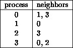
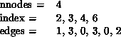
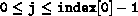
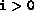
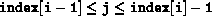
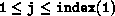
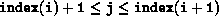
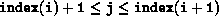

MPI_GRAPH_CREATE(comm_old, nnodes, index, edges, reorder, comm_graph)
[ IN comm_old] input communicator (handle)
[ IN nnodes] number of nodes in graph (integer)
[ IN index] array of integers describing node degrees (see below)
[ IN edges] array of integers describing graph edges (see below)
[ IN reorder] ranking may be reordered ( true) or not ( false) (logical)
[ OUT comm_graph] communicator with graph topology added (handle)
int MPI_Graph_create(MPI_Comm comm_old, int nnodes, int *index, int *edges, int reorder, MPI_Comm *comm_graph)
MPI_GRAPH_CREATE(COMM_OLD, NNODES, INDEX, EDGES, REORDER, COMM_GRAPH, IERROR)
INTEGER COMM_OLD, NNODES, INDEX(*), EDGES(*), COMM_GRAPH, IERROR
LOGICAL REORDER
MPI_GRAPH_CREATE returns a handle to a new communicator to which the graph topology information is attached. If reorder = false then the rank of each process in the new group is identical to its rank in the old group. Otherwise, the function may reorder the processes. If the size, nnodes, of the graph is smaller than the size of the group of comm, then some processes are returned MPI_COMM_NULL, in analogy to MPI_CART_CREATE and MPI_COMM_SPLIT. The call is erroneous if it specifies a graph that is larger than the group size of the input communicator.
The three parameters nnodes, index and edges define the graph structure. nnodes is the number of nodes of the graph. The nodes are numbered from 0 to nnodes-1. The ith entry of array index stores the total number of neighbors of the first i graph nodes. The lists of neighbors of nodes 0, 1, ..., nnodes-1 are stored in consecutive locations in array edges. The array edges is a flattened representation of the edge lists. The total number of entries in index is nnodes and the total number of entries in edges is equal to the number of graph edges.
The definitions of the arguments nnodes, index, and edges are illustrated with the following simple example.
Example
Assume there are four processes 0, 1, 2, 3 with the following
adjacency matrix:

Then, the input arguments are:

Thus, in C, index[0] is the degree of node zero, and index[i] - index[i-1] is the degree of node i, i=1, ..., nnodes-1; the list of neighbors of node zero is stored in edges[j], for  and the list of neighbors of node i,  , is stored in edges[j],  .
In Fortran, index(1) is the degree of node zero, and index(i+1) -
index(i) is the degree of node i, i=1, ..., nnodes-1;
the list of neighbors of node zero is stored in edges(j), for

and the list of neighbors of node
i,  ,
is stored in edges(j), 
.
,
is stored in edges(j), 
.
[] Advice
to implementors.
The following topology information is likely to be stored with a communicator: